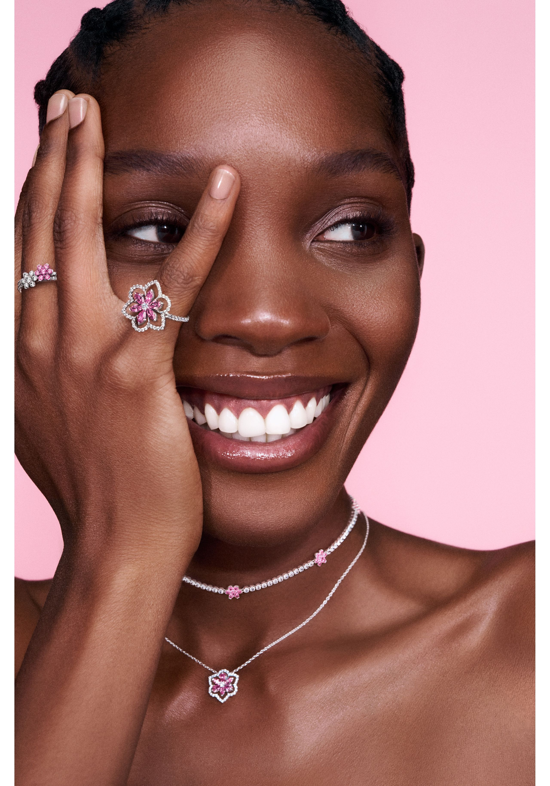
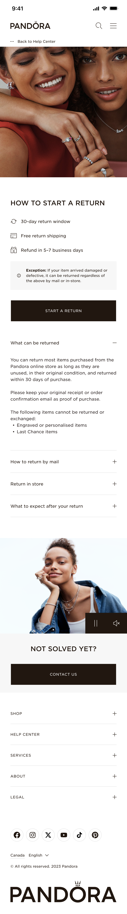
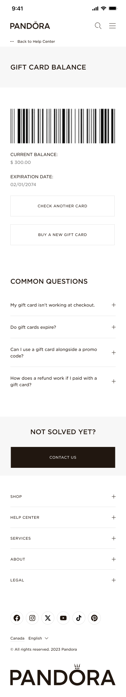
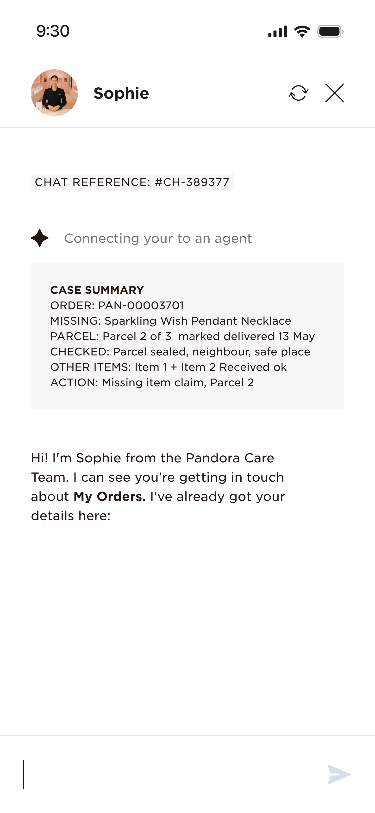
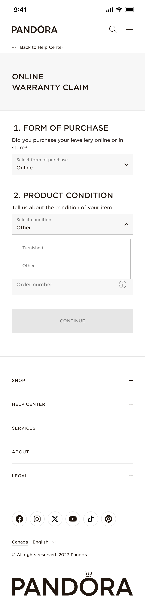
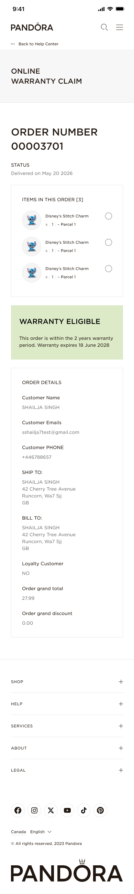

The problem
Answers existed.
Resolution took a call.
The Help Center had 94 articles, but customers still struggled to complete common tasks. Order tracking—the largest contact driver—had no self-service path. Articles explained what to do, while the customer still needed help doing it.
Research & testing
Follow the questions
customers actually ask.
I audited navigation, content and accessibility in the US, UK and France, then compared search and contact data across five markets. Returns, orders, sizing, warranty and gift cards repeatedly surfaced as the highest-priority needs.
Task-based testing focused on three situations—an order that hadn’t arrived, returning a bracelet and checking a broken clasp’s warranty. Think-aloud sessions helped expose confusing labels, incomplete answers and the moments people abandoned self-service.
What changed in the design
Quick actions lead directly to tools or visual guides. The five most-used FAQs answer questions inline. Topics follow local demand, and contact support sits after the self-service options.
Returns
A little reassurance.
A clear next step.
A visual guide brings return steps, practical answers and the start-return action together. Photography gives a familiar brand feel to a functional moment.


Self-service
A tool for the task.
Order tracking works with an order number and email, including for customers without an account. Relevant FAQs stay alongside the tool, helping customers recover when tracking fails.
The gift-card result combines balance, expiry and a scannable barcode. The same screen helps someone check their card and use it at the till.

AI assistance
Answer first.
Keep the context.
Search puts an answer grounded in Pandora’s knowledge base above related articles. When confidence is too low, the AI answer is hidden and the article results remain available.
Clara receives the query and session context. Escalation to a person stays available, with the conversation designed to transfer so the customer can continue without repeating their story.

Warranty
From a question
to a clear outcome.
The claim flow reveals the next question as it becomes relevant. An eligible order shows the covered items and warranty period, so the customer knows where they stand.


The details
Make the next step clear.
Warranty with honest outcomes
Progressive questions narrow the route by purchase type and condition. Store purchases lead to stores, tarnishing leads to care guidance, and coverage resolves to an eligible or expired outcome.
Errors that offer a way forward
Field-level messages identify the failing value and provide a next step. Support remains available when the tool cannot resolve the issue.
Responsive through the whole journey
Quick actions adapt from cards to rows, and footer columns become accordions on smaller screens. The article, tool, FAQs and contact options form one continuous journey.
Delivery
Ready for implementation.
I documented responsive behavior, error states, dependencies and ownership in Figma and Confluence, with 16 Jira subtasks for implementation. Delivery starts with anonymous self-service, followed by expanded Clara capabilities and later authenticated support.
Build is in progress. The measurement plan tracks contact deflection, self-service resolution, Clara containment and handling time against a pre-launch baseline.